Ryo Ishigaki
- SoundCloud, Twitter
- Hamamatsu.rb (メンバー), Yara:Makers (元メンバー), fff (メンバー)
ISGK Instruments
- risgk blog (シンセ開発ログ) - Tumblr
#13 MIDI Controller PRMC-1
MIDI Controller using PicoRuby/R2P2 (2025)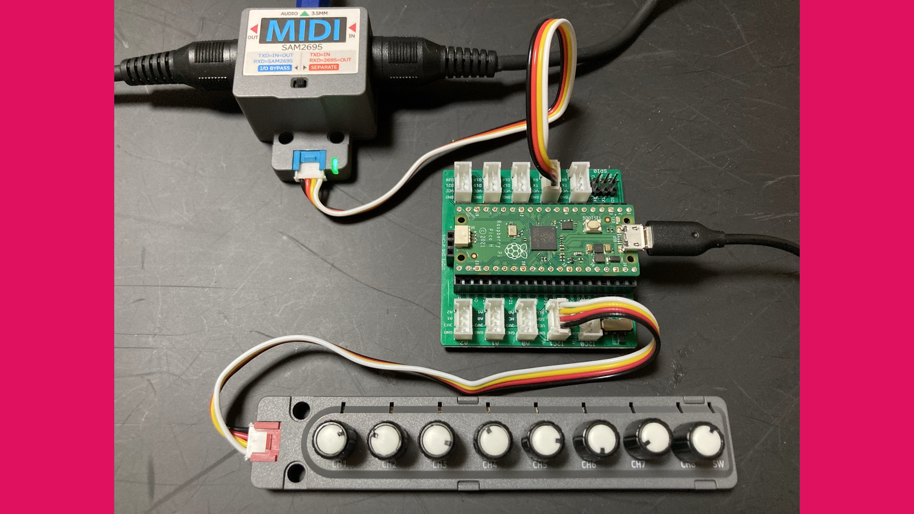
{kind=link}
#12.1 PCB for Digital Synth PRA32-U2 (Tentative)
PCB for Digital Synth PRA32-U2#12 Digital Synth PRA32-U2
4 Voice Polyphonic/Paraphonic Synthesizer for Raspberry Pi Pico 2/RP2350 (2025)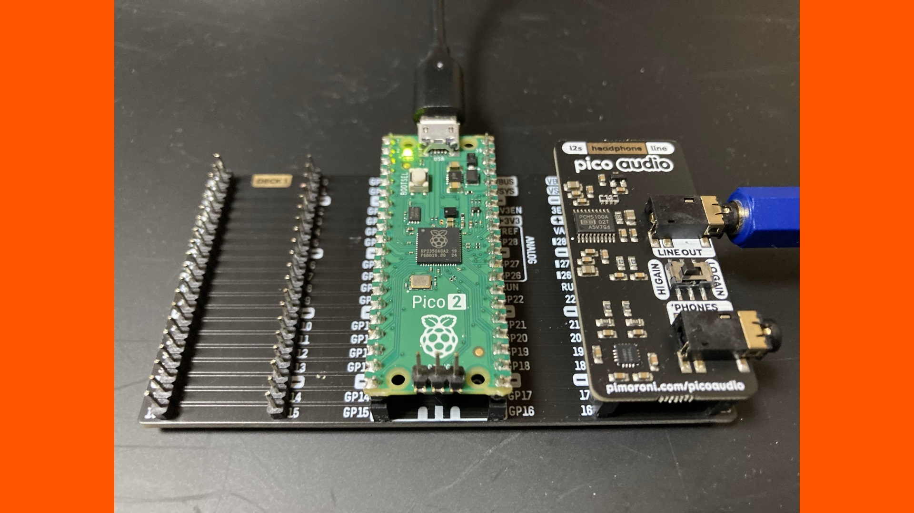 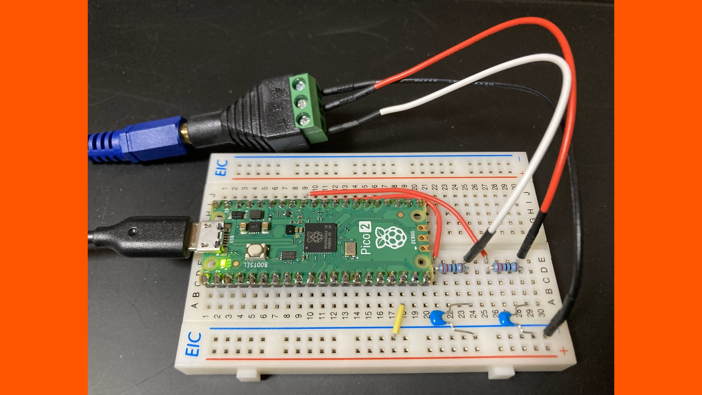 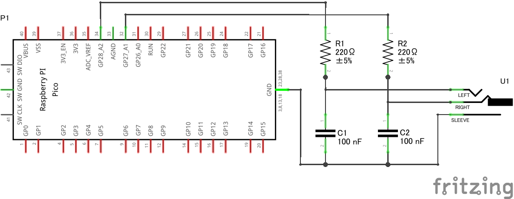
{kind=link}
{kind=link}
{kind=link}
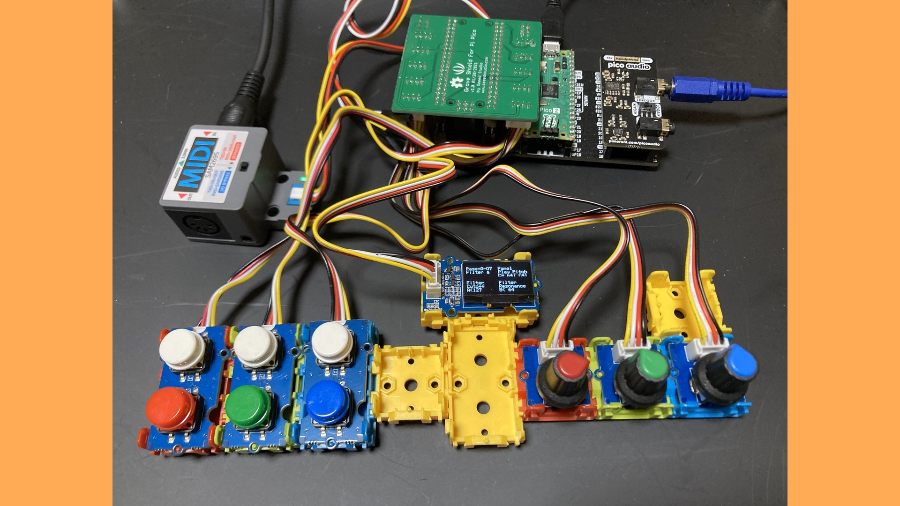 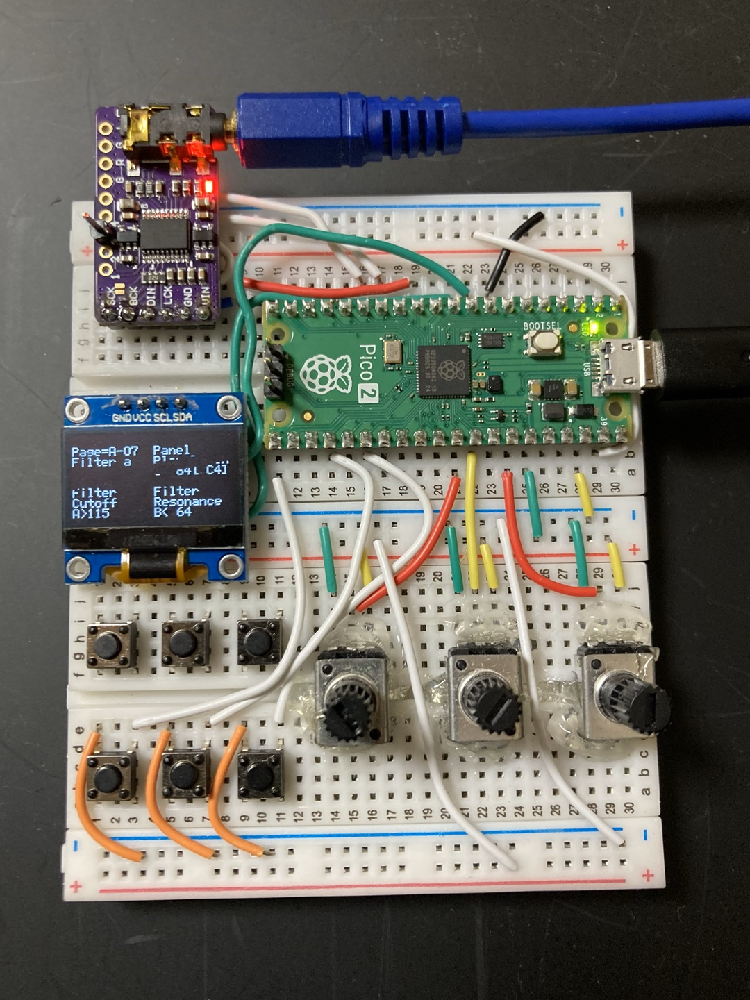 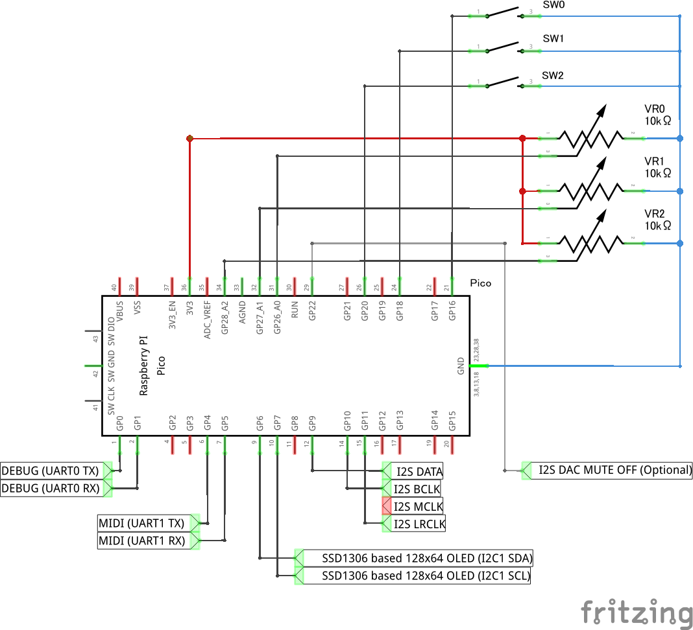
{kind=link}
{kind=link}
{kind=link}
- View on GitHub (最新リリース), PRA32-U Editor
- 出展 (プロトタイプ):
- 2025/02/21 シンセカイリアル エキシビション (CAIEさんによる動画) (記念写真)
- NT京都 2025 (予定) (説明資料)
#11.2 Digital Synth PRA32-U with Panel
Synthesizer with Control Panel for Raspberry Pi Pico/RP2040 (2024)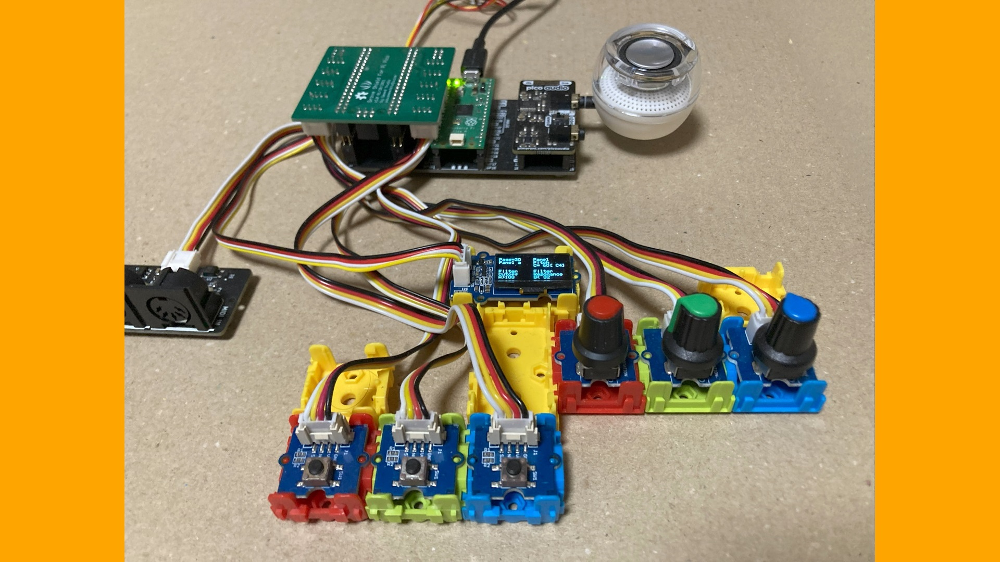 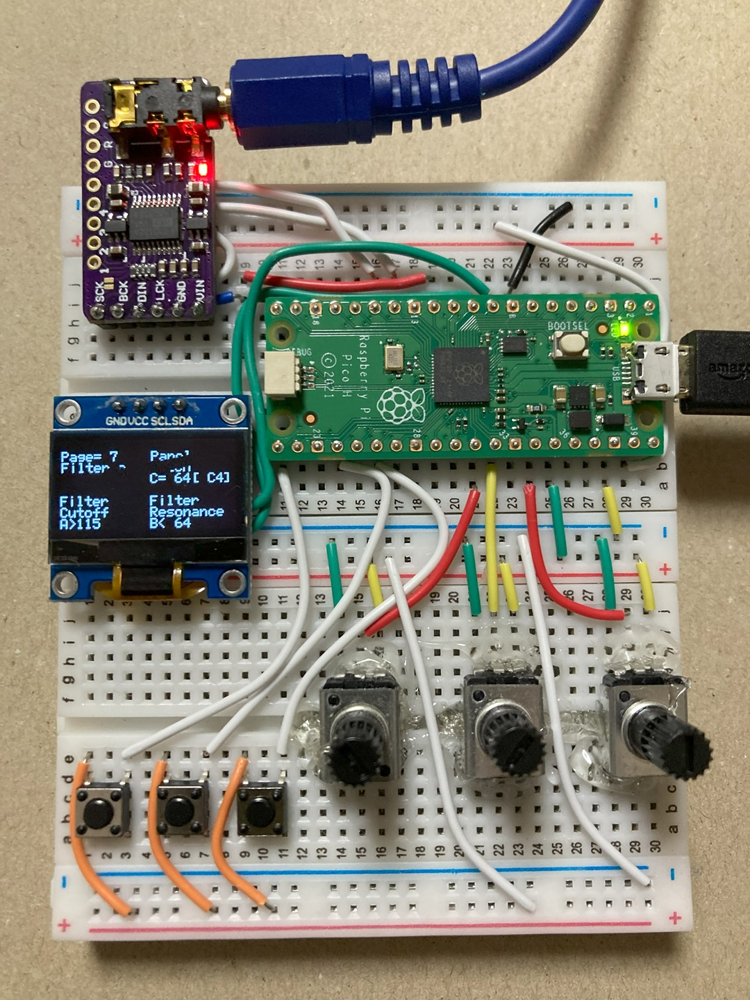 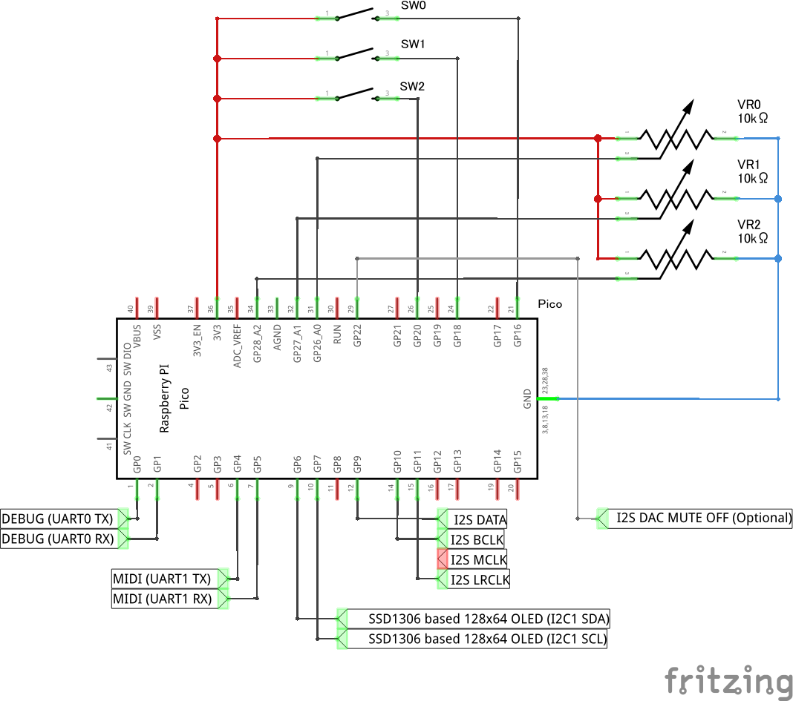
{kind=link}
{kind=link}
{kind=link}
#11.1 Digital Synth PRA32-U PWM Audio Edition
Low-cost Synthesizer for Raspberry Pi Pico/RP2040 (2024)
#11 Digital Synth PRA32-U
4 Voice Polyphonic/Paraphonic Synthesizer for Raspberry Pi Pico/RP2040 (2023-2024)- View on GitHub (最新リリース), PRA32-U Editor
- Digital Synth PRA32-U（Raspberry Pi Pico用） - Fabble (作り方)
- v0.1 (VRA8-U type-16 v2.2によく似た音を出します):
- v0.2:
- 出展 (v0.4):
- SWEST25 (インタラクティブセッション, 説明資料)
- 関連記事: Interface 2023年12月号 SWEST25参加レポート
- 出展 (v1):
- 出展 (v2, PWM Audio Edition, with Panel):
- Maker Faire Kyoto 2024 (説明資料), 2024/6/14 シンセカイリアルSP3
- Hamamatsu Micro Maker Faire 2024 (説明資料)
- 紹介記事: Make: Japan | ミニライブも初開催！ おなじみの自作楽器から子どもの心をつかむガジェットまで約40組の多様なプロジェクトが集まった「Hamamatsu Micro Maker Faire 2024」会場レポート
- SWEST26, NT東京2024 (説明資料)
- Maker Faire Tokyo 2024 (説明資料)
- 2024/10/11 シンセカイリアル エキシビション (1分半でわかるシンセカイリアル) (記念写真)
- 出展 (v3, PWM Audio Edition, with Panel):
#10.1 Digital Synth VRA8-U type-16
VRA8-U Special Edition with 16-bit Audio Output (2023)- 推奨回路図 (Recommended Circuit Diagram), 実体配線図 (Actual Wiring Diagram)
- View on GitHub (VRA8-U最新リリース), VRA8-U type-16 CTRL
- 「VRA8-U type-16」の動作方法 - Fabble (作り方)
- 出展: ピコケット2 (説明資料),
Maker Faire Kyoto 2023 (説明資料),
2024/02/23 シンセカイリアルSP2 (derpippoさんによる動画)
{kind=link}
{kind=link}
#10 Digital Synth VRA8-U
Monophonic/Paraphonic United Synthesizer for Arduino Uno (2022)- 推奨回路図 (Recommended Circuit Diagram), 実体配線図 (Actual Wiring Diagram)
- View on GitHub (最新リリース), VRA8-U CTRL
- Digital Synth VRA8-U Demo (2022/08/17) - YouTube
- Digital Synth VRA8-U（Arduino Uno用） - Fabble (作り方)
- 出展: SWEST24 (インタラクティブセッション ベストプロダクト賞 ゴールド,
EmbLT発表資料),
Maker Faire Tokyo 2022 (説明資料), Hamamatsu Micro Maker Faire 2022 (説明資料), Ogaki Mini Maker Faire 2022 (説明資料) - 紹介記事:
- 【藤本健のDigital Audio Laboratory】 - AV Watch
- 未来の電子楽器大集合!? ものづくり祭典「Maker Faire」に行ってみた
- 「Arduino Uno」でシンセサイザを自作してみた。前編
- MIDIで動くぞ! 「Arduino Uno」でシンセサイザ自作した。後編
- 楽しくやろう。（boochowさんのブログ）
- ど～もさんのnote
{kind=link}
{kind=link}
#9.2 pico_synth 2023 Edition
Monophonic Synthesizer for Raspberry Pi Pico (2023)- ラズベリー・パイPico/Pico W攻略本 (CQ出版社, 2023年)
・第6部第2章：リアルタイム処理のために軽量化！シンセサイザの製作
・第6部第3章：音の時間変化に対応したシンセサイザ作り - サポート・ページ（プログラムの入手先）
IF2304Pico/6bu/S2
IF2304Pico/6bu/S3- これらのプログラムは、読者の方は自由に利用していただいて構いません
- 出展: ピコケット2, Maker Faire Kyoto 2023
#9.1 pico_synth_ex
4 Voice Polyphonic Synthesizer for Raspberry Pi Pico (2021)- View on GitHub
- 出展 (v0.1): SWEST23 (インタラクティブセッション ベストプロダクト賞 ゴールド,
EmbLT発表資料, デモサウンド)
#9 pico_synth
Monophonic Synthesizer for Raspberry Pi Pico (2021)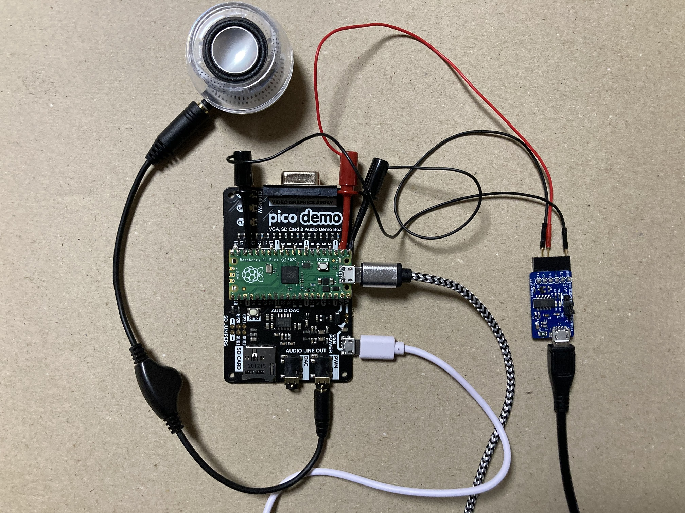
{kind=link}
- Interface 2021年8月号 ●特集 ラズパイのマイコンPico攻略本
・第6部第2章：リアルタイム処理のために軽量化！シンセサイザの製作 - Interface 訂正と修正 2021年8月号 p.142 ～ p.153
- Interface 2021年 ダウンロード・データ 8月号 ラズパイのマイコンPico攻略本
IF2108TB6S2- このプログラムは、読者の方は自由に利用していただいて構いません
- pico_synth - YouTube
#8 Digital Synth VRA8-Q
Quadraphonic Synthesizer with Stereo Chorus Effector for Arduino Uno (2020-2022)- 推奨回路図 (Recommended Circuit Diagram), 実体配線図 (Actual Wiring Diagram)
- 旧・推奨回路図, 旧・実体配線図
- View on GitHub (最新リリース), VRA8-Q CTRL
- Digital Synth VRA8-Q（Arduino Uno用） - Fabble (作り方)
- Digital Synth VRA8-Q for Arduino Uno - Instructables (How to make)
- Digital Synth VRA8-Q v3.2 Demo - YouTube
- 出展 (プロトタイプ): SWEST22 (EmbLT発表資料, デモサウンド1, デモサウンド2)
- 出展 (v1): Maker Faire Tokyo 2020 (説明資料)
- 出展 (v2): Ogaki Mini Maker Faire 2020 (配信アーカイブ)
- 出展 (v3): Hamamatsu Micro Maker Faire出展者ミートアップ (説明資料)
- 出展 (v4): Maker Faire Kyoto 2021 (Twitterを使った作品発表)
- 出展 (v5): Maker Faire Tokyo 2021 (Twitterを使った作品発表),
電子工作者&シンセビルダー同人展示即売会「ピコケット」 (説明資料)
{kind=link}
{kind=link}
{kind=link}
{kind=link}
#7.1 Digital Synth VRA8-N pSAW-16
VRA8-N Special Edition with 16-step Pseudo-SAW Wave (2020)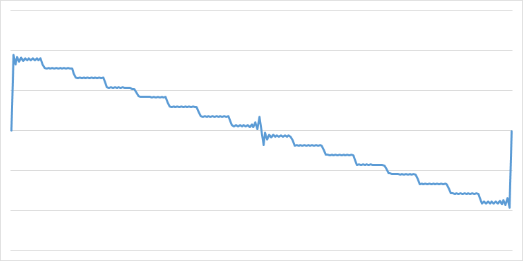
{kind=link}
#7 Digital Synth VRA8-N
Monophonic Synthesizer for Arduino Uno (2018-2019)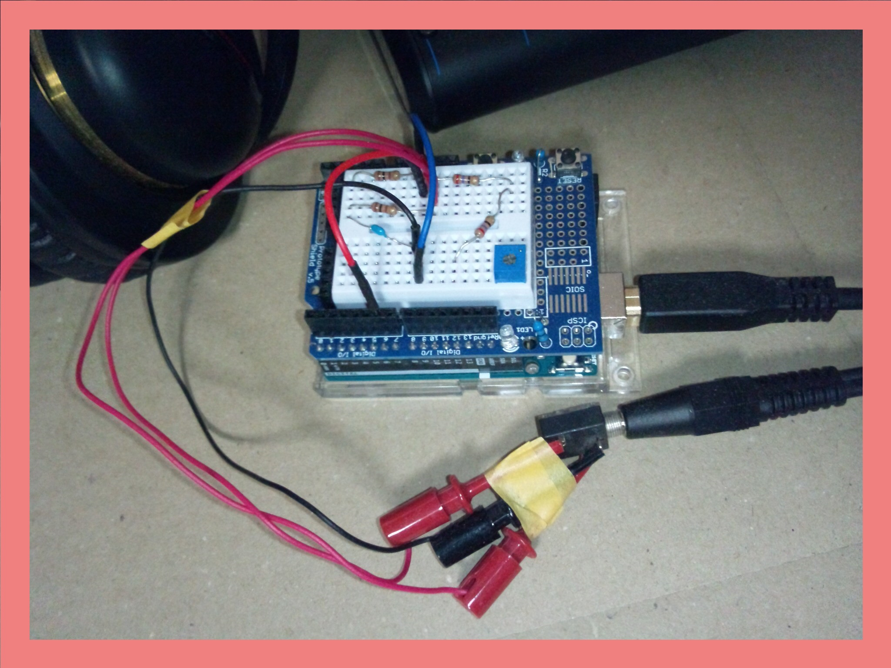
{kind=link}
- View on GitHub (最新リリース), VRA8-N CTRL
- Digital Synth VRA8-N（Arduino Uno用） - Fabble
- Digital Synth VRA8-N for Arduino Uno - Instructables
- Digital Synth VRA8-N v2.4 Performance - YouTube
- Digital Synth VRA8-N v1.0.0 Demo - YouTube
- 出展 (プロトタイプ): NT京都2018
- 出展 (v1): Maker Faire Tokyo 2018 (説明資料),
SWEST20 (インタラクティブセッション ベストプロダクト賞 ブロンズ), ASBS18,
Ogaki Mini Maker Faire 2018 (説明資料), ABCD浜松 (Damonde Hamamatsu),
OSC2019 Hamanako (説明資料) - 出展 (v2): Maker Faire Kyoto 2019 (説明資料),
Maker Faire Tokyo 2019 (v2説明資料, mode-VC説明資料),
SWEST21 (mode-VC, インタラクティブセッション ベストプロダクト賞 シルバー),
サウンドデザインファクトリーin浜松2019 - コラボ企画: 奇楽堂 SAXduino, SAXduino 19A (VRA8-N音源搭載)
- 紹介記事: 【藤本健のDigital Audio Laboratory】本格&おもしろシンセ集結! 空き缶のMIDI楽器、クマ型リズムマシンがMaker Faireに - AV Watch
- 紹介動画: ISGK Instruments Digital Synth VRA8-N v2.4 for Arduino UNO - 03ch movie - YouTube
OBSOLETE WORKS
#6 Digital Synth VRA8-Px
3 Voice Paraphonic Synthesizer for Arduino Uno (2016-2017)- View on GitHub (v2), (v1), VRA8-Px CTRL (v2)
- Digital Synth VRA8-Px for Arduino Uno - Instructables
- シンセサイザーをDIYで作ってみる・第6弾 - Fabble
- 8ビットCPUでシンセサイザーを作ってみた・第5弾 - ニコニコ動画
- Digital Synth VRA8-Px 1.2.0 Demo - YouTube
- 出展 (プロトタイプ): NT名古屋2016
- 出展 (v1): Ogaki Mini Maker Faire 2016, OSC2017 Hamanako, NT京都2017 (出展中止)
- 出展 (v2): Maker Faire Tokyo 2017 (説明資料), SWEST19, NT名古屋2017, ASBS17, OSC2018 Hamanako
- 紹介記事: 【藤本健のDigital Audio Laboratory】「けものエフェクター」も登場。本格派～異色の音モノがMaker Faireに集結 - AV Watch
#5 Digital Synth VRA8-P
3 Voice Pseudo Polyphonic Synthesizer for Arduino Uno (2016)- View on GitHub, VRA8-P CTRL
- Digital Synth VRA8-P for Arduino Uno - Instructables
- 8ビットCPUでシンセサイザーを作ってみた・第4弾 - ニコニコ動画
- Digital Synth VRA8-P 1.0.0 Demo - YouTube
- 出展: Maker Faire Tokyo 2016 (説明資料), SWEST18
- 紹介記事: モノ作りの祭典＜Maker Faire Tokyo 2016＞レポ、コルグの新真空管「Nutube」、自作のシンセやMIDIコントローラーが多数出展 | KORG | BARKS音楽ニュース
#4 Digital Synth VRA8-X
Experimental Synthesizer for Arduino Uno (2015)- View on GitHub, VRA8-X CTRL
- Digital Synth VRA8-X for Arduino Uno - Instructables
- 出展: 浜松楽器メイカーズフェスティバル, OSC2016 Hamanako
#3 Digital Synth VRA8-M
Monophonic Synthesizer for Arduino Uno (2015)- View on GitHub, VRA8-M CTRL
- Digital Synth VRA8-M for Arduino Uno - Instructables
- 8ビットCPUでシンセサイザーを作ってみた・第2弾 - ニコニコ動画
- 出展: Maker Faire Tokyo 2015, NT名古屋2015
#2 Digital Synth WRA32
Virtual Analog Synthesizer Web App (2014)#1 Digital Synth VRA8
Virtual Analog Synthesizer for Arduino Uno (2014)- View on GitHub, VRA8 CTRL
- Ruby x Arduinoでシンセサイザーを作ってみた - 浜松Ruby会議01
- 出展: 伊勢ギーク・フェア2014, OSC2015 Hamanako, 浜松Ruby会議01